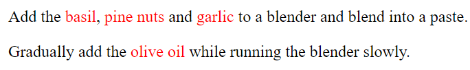

Element HTML
Element HTML
HTML adalah bahasa markup yang digunakan untuk membuat struktur dan mengatur konten pada halaman web. Ada beberapa tag atau elemen dasar HTML yang sering digunakan untuk membangun halaman web. Berikut adalah beberapa tag HTML yang umum digunakan:
Heading
<h1> to <h6>: Membuat heading atau judul dengan tingkat kepentingan yang berbeda. <h1> adalah yang tertinggi, dan <h6> adalah yang terendah.
input :
output :
Paragraf
<p>: Elemen paragraf, digunakan untuk menandai teks sebagai paragraf.
input :
output :
Link
<a>: Elemen tautan, digunakan untuk membuat tautan ke halaman lain atau sumber daya eksternal.
input :
output :
Image
<img>: Elemen gambar, digunakan untuk menampilkan gambar di halaman web.
input :
output :
List
<ul>, <ol>, <li>: Digunakan untuk membuat daftar tak terurut (<ul>), daftar terurut (<ol>), dan item daftar (<li>).
input :
output :
Line Break
<br>: Elemen pemutus baris, digunakan untuk membuat baris baru di tengah teks.
input :

output :
Horizontal Rule
<hr>: Elemen garis horizontal, digunakan untuk membuat garis pemisah atau pembatas di halaman.
input :
output :
Table
<table>, <tr>, <td>: Digunakan untuk membuat tabel dan sel di dalamnya.
input :
output :
Form
<form>, <input>, <button>: Elemen form, digunakan untuk membuat formulir pengguna yang dapat diisi dan tombol.
input :
output :
Script
<script>: Menambahkan skrip JavaScript ke halaman web.Style
<style>: Digunakan untuk menyisipkan aturan gaya CSS secara langsung ke dalam halaman HTML.
input :

output :
The Content Division element
<div>: Elemen divisi, digunakan untuk mengelompokkan elemen-elemen HTML ke dalam blok dan memungkinkan penerapan CSS atau manipulasi JavaScript.
input :
output :
The Content Span element
<span>: Mirip dengan <div>, tetapi digunakan untuk mengelompokkan elemen dalam baris atau bagian kecil.
input :
output :
